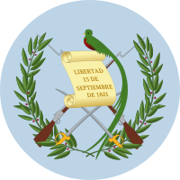
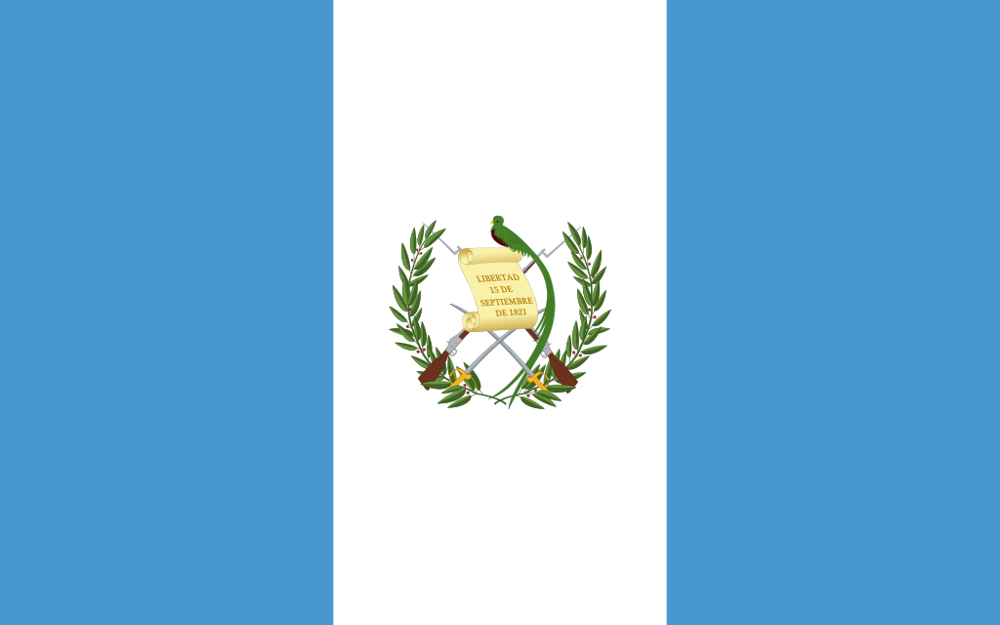
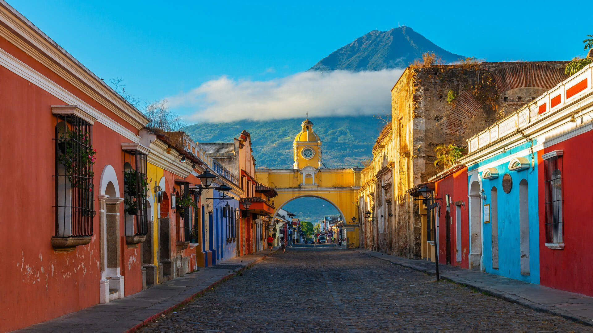
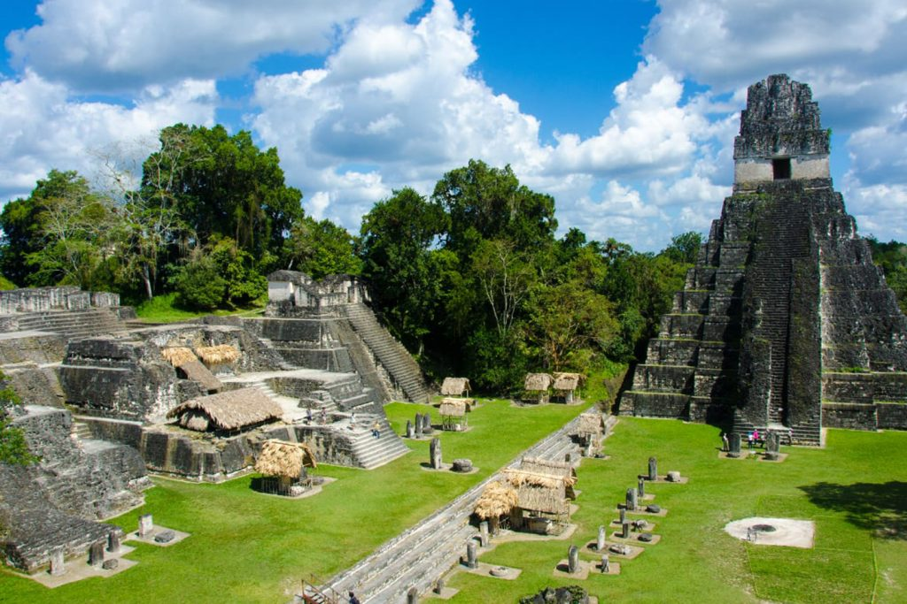
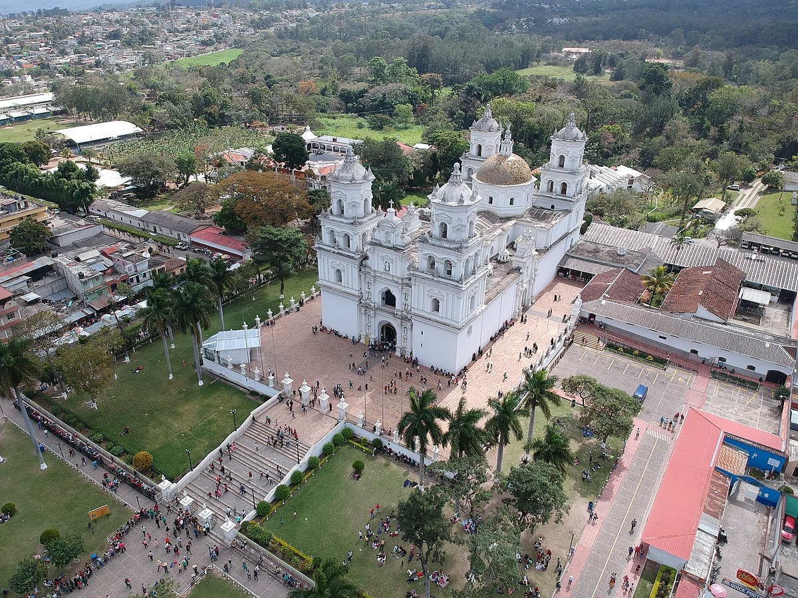
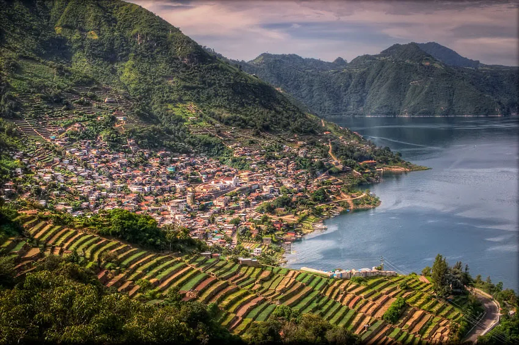
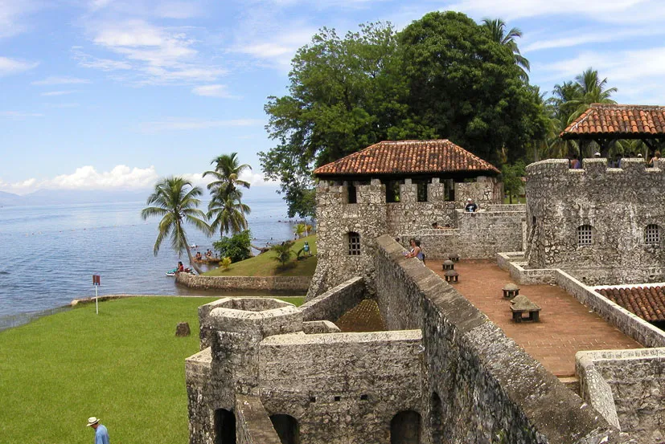

Historia
La civilización Maya se desarrolló durante 2.000 años hasta la conquista de los españoles
capitaneados por don Pedro de Alvarado en 1.523
Durante el primer milenio, los Mayas alcanzaron un importantisimo desarrollo científico, social y
cultural entorno a las grandes ciudades clásicas de los Mayas en El Peten y en las tierras bajas al
norte de Guatemala (Yucatán). Méjico). Las naciones – estado de origen maya de los Cakchiqueles,
Mames, Quichés y Tzutuhíles, que vivieron en las tierras altas (Altiplano de DGuatemala), aún
constituyen una parte significativa de la actual población guatemalteca.
En 1,821 se logra la Independencia, primero formando parte del imperio mejicano, y posteriormente
Guatemala perteneció a la efímera Federación de “Provincias Unidas de Centroamérica”. La revolución
liberal de final del siglo XIX intentó modernizar el país e introdujo el cultivo del café que solo
beneficiaria a los latifundistas criollos.
Los pueblos indígenas continuaban en su exclusión como “hombres de maíz” (Miguel Angel Asturias),
refugiados en su cosmogonía, que le da sentido a lo humano, la naturaleza y el universo, formando un
todo armónico, equilibrado inspirado en cada persona por su nahualt (guía y protector). Los tejidos,
su variedad y colorido, son la expresión plástica y pedagógica de la concepción de la vida y de las
relaciones de los hombres y las mujeres mayas con su entorno, Son expresiones vivas y vigentes de
filosofía, de sentimientos y de la experiencia vital en la historia de los pueblos mayas.
El siglo XX se inicia con el dominio de la United Fruit Company, compañía frutera norteamericana,
propietaria del 40% de la mejor tierra del país y del ferrocarril. Entre la United Fruit Company y
el presidente Jorge Ubico, los pueblos mayas vivieron una de las épocas más represivas de su
historia, llegándose a prohibir las manifestaciones religiosas autóctonas y las expresiones
culturales de pueblos milenarios, que en la clandestinidad vivían su identidad étnica, religiosa y
cultural para darle sentido trascendente a su existencia.
Simbolos patrios
Escudo nacional
Escudo de Guatemala. Es uno de los cinco Símbolos Patrios de Guatemala, establecido oficialmente como tal
en el gobierno del Presidente de Guatemala, Miguel García Granados, el 18 de noviembre de 1871. Su
creación original fue obra del artista de origen suizo Juan Bautista Frener. El mismo va en el centro de
la Bandera Nacional aunque también puede estar representado individualmente.

Bandera actual
El 17 de agosto de 1871 se determinó que la Bandera tuviera dos colores: el azul celeste y el blanco. La
franja blanca entre las dos celestes representa el hecho de que el país se encuentra entre el océano
Pacífico al sur y el mar Caribe al noroeste. En el centro aparece el Escudo Nacional.
El blanco representa pureza, integridad, fe, obediencia, firmeza, vigilancia, paz y nación. El azul
simboliza justicia, lealtad, dulzura, fortaleza, cielo guatemalteco y los dos mares citados que bañan
las costas del país, al igual que las de Centroamérica.

Himno de Guatemala
!Guatemala feliz...! que tus aras
no profane jamás el verdugo;
ni haya esclavos que laman el yugo
ni tiranos que escupan tu faz.
Si mañana tu suelo sagrado
lo amenaza invasión extranjera,
libre al viento tu hermosa bandera
a vencer o a morir llamará.
Coro..
Libre al viento tu hermosa bandera
a vencer o a morir llamará;
que tu pueblo con ánima fiera
antes muerto que esclavo será.
De tus viejas y duras cadenas
tú forjaste con mano iracunda,
el arado que el suelo fecunda
y la espada que salva el honor.
Nuestros padres lucharon un día
encendidos en patrio ardimiento,
y lograron sin choque sangriento
colocarte en un trono de amor.
Coro..
Y lograron sin choque sangriento
colocarte en un trono de amor,
que de patria en enérgico acento
dieron vida al ideal redentor.
que hoy ceñimos a tu inmortales sienes.
Letra: Ramón P. Molina
Música: Rafael Alvarez Ovalle.
Extensión territorial
108,889 km²
Lista de departamentos
- Alta Verapaz
- Baja Verapaz
- Chimaltenago
- Chiquimula
- Guatemala
- El Progreso
- Escuintla
- Huehuetenango
- Izabal
- Jalapa
- Jutiapa
- Petén
- Quetzaltenango
- Quiché
- Retalhuleu
- Sacatepequez
- San Marcos
- Santa Rosa
- Sololá
- Suchitepequez
- Totonicapán
- Zacapa
Lugares turísticos mas importantes
1. Antigua Guatemala
A 25 kilómetros de la capital se ubica esta ilustre localidad colonial. Durante su historia fue llamada
con varios nombres, el primero fue Santiago de los Caballeros de Guatemala. Con él permaneció durante la
colonia, pero hoy sencillamente se le denomina Antigua.

2. Tikal
La principal postal de Guatemala en el mundo es uno de los conjuntos arquitectónicos más importantes de
la civilización maya. Se encuentra en el municipio de Flores, del departamento de Petén, y fue uno de
los reinos más poderosos en la Centroamérica prehispánica.

3. Basilica del Cristo Negro de Esquipulas
Esquipulas, en el departamento de Chiquimula, es uno de los centros de peregrinaje más importantes de
Latinoamérica por el famoso Cristo Negro que alberga la basílica de la ciudad. La Catedral Basílica
de Esquipulas es el templo cristiano más grande de Centroamérica y el más visitado, recibiendo
anualmente casi seis millones de fieles.

4. Lago de Atitlán
Uno de los escenarios naturales más sorprendentes de Guatemala, reconocido como uno de los lagos más
hermosos del mundo, maravillando con sus aguas cristalinas y los tres imponentes volcanes que lo
rodean: Atitlán, Tolimán y San Pedro.
Entre sus singularidades se encuentran los 12 pueblecitos circundantes, accesibles a través de
lanchas que recorren el lago, cada uno con habitantes que visten de trajes típicos que varían
significativamente entre pueblo y pueblo. El acceso más común es por la ciudad de Panajache

5. Castillo San Felipe
Fortaleza construida en el siglo XVII para proteger el ingreso de piratas a Izabal a través del Río
Dulce.
Gracias a los trabajos de restauración hoy es posible de visitar prácticamente todos los recintos
del imponente castillo, tales como las áreas de vigía, artillería y aprisionamiento, como también
navegar en el lago Izabal apreciando los alrededores de la fortaleza.
